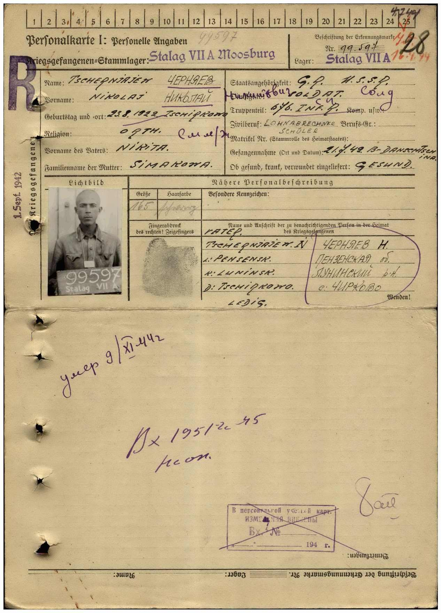
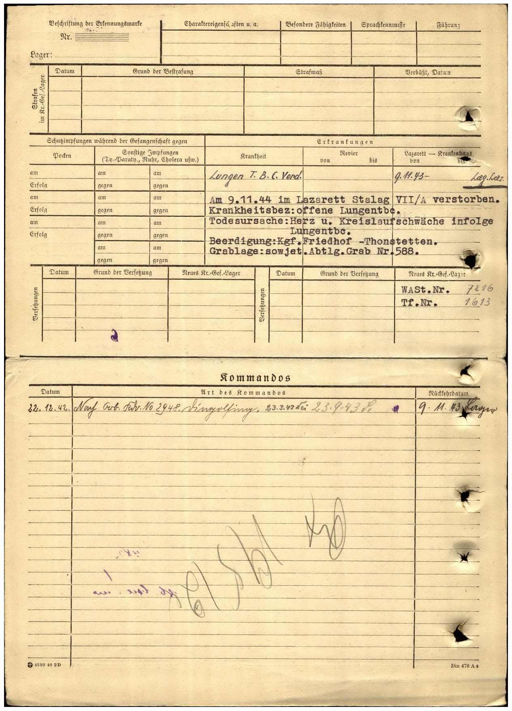

Карта военопленного Черняева Николая Никитовича, лагерь Stalag VII/A Моосбург, Бавария, Третий Рейх, Германия. Предположительное время фотографии - сентябрь 1942 год.


Ответ Бундесархива на запрос информации о военопленном Черняеве Николае Никитовиче.